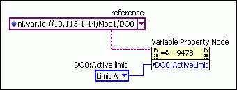
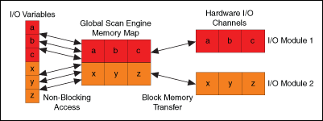
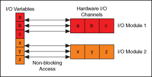

An I/O variable is a type of shared variable that transfers I/O data. When accessed locally, I/O variables use the NI Scan Engine for single-point access to I/O data. When accessed remotely, I/O variables use the NI Publish-Subscribe Protocol (NI-PSP) for single-point or buffered access to I/O data. An I/O variable can communicate directly with a physical I/O channel or can transfer custom I/O data between an FPGA VI and a real-time (RT) VI running on the same target.
|
Caution��The NI Scan Engine does not buffer data. To avoid losing data when accessing I/O variables locally, you must read each data point before the next point arrives and avoid writing data faster than the NI Scan Engine period. |
The following table summarizes the use cases for I/O variables:
| Use | I/O Variable Type |
|---|---|
| Transferring scaled I/O data between the I/O hardware and a LabVIEW VI without using the LabVIEW FPGA Module | I/O Variables for Scaled I/O Data |
| Transferring custom FPGA-processed I/O data between a LabVIEW FPGA VI and a LabVIEW Real-Time VI running on the same hardware device | I/O Variables for Custom FPGA I/O Data |
 |
Note��Refer to the specific hardware device documentation for information about NI Scan Engine support. |
To use I/O variables for scaled I/O data, you first must connect a supported I/O device to a target with the NI Scan Engine installed and then add the I/O device to the target in LabVIEW project.
When you add a supported I/O device to a supported target in the Project Explorer window, LabVIEW automatically adds an I/O variable for each I/O channel. If you physically add an I/O device to a target included in the current LabVIEW project, you must add the new I/O device to the project and deploy the corresponding I/O variables before you can use them.
If you physically remove an I/O device from a target that is part of the current LabVIEW project, you must delete the I/O device from the project and redeploy the target that contained the I/O device. Redeploying the target ensures that the configuration on the target reflects the project configuration. You can use the Project & System Comparison dialog box to ensure that the project and target configurations match.
If the project includes an FPGA target that supports the NI Scan Engine, you can create user-defined I/O variables to transfer custom I/O data between FPGA VIs and RT VIs running on the same hardware device.
You can add user-defined I/O variables to the block diagrams of FPGA VIs and RT VIs running on the chassis that hosts the user-defined I/O variables. However, because all I/O variables are unidirectional, you must configure the direction of each user-defined I/O variable as either FPGA to Host or Host to FPGA. For example, you can acquire analog I/O data and perform an FFT on the data in an FPGA VI, use an FPGA to Host I/O variable to transfer the processed data to a control loop in an RT VI, then use a Host to FPGA I/O variable to transfer output data from the RT control loop back to the FPGA for output to the physical I/O channel.
You must install the LabVIEW FPGA Module to create user-defined I/O variables. However, if you have only the Real-Time Module, you can access user-defined I/O variables from RT VIs even if you do not install the LabVIEW FPGA Module. For example, a developer with the LabVIEW FPGA Module could create user-defined I/O variables and compile an FPGA bitfile that accesses those variables. Then that developer could distribute the bitfile and the LabVIEW project containing the user-defined I/O variables to another developer without the FPGA Module, who could use the project to run the bitfile on a CompactRIO chassis. In this case, the second developer could not create new user-defined I/O variables but could use the Real-Time Module to access the user-defined I/O variables created by the first developer.
(Windows) If network publishing is enabled on a user-defined I/O variable, you can use the variable in any RT VI or Windows-based VI within the same LabVIEW project. For example, you can use network-published I/O variables to create a user interface VI that runs on Windows.
|
Note��User-defined I/O variables support scanned access only. You cannot use direct access for user-defined I/O variables. |
You can configure I/O variables interactively at edit-time or run-time or programmatically at run-time. You also can use a combination of these methods. The following table summarizes the advantages and disadvantages of each method:
| Method | Use Case | Advantages | Disadvantages |
|---|---|---|---|
| Interactive | Configuring settings for I/O variables when you have access to the Project Explorer window. | Requires less programming. |
|
| Programmatic |
|
|
Requires more programming. |
Use the Shared Variable Properties dialog box to configure a single I/O variable or the Multiple Variable Editor window to configure multiple I/O variables simultaneously.
You can update the description, network, and scaling options of an I/O variable even while running a VI that uses the I/O variable. However, you cannot update the name or data type of an I/O variable at run-time.
|
Note��When you add a new I/O variable or change the configuration of an I/O variable, you must deploy the variable to activate the new configuration. |
Complete the following steps to use the Variable properties to configure an I/O variable programmatically:
 Find
FindThe following figure shows an example of programmatically configuring an I/O variable on a remote target:

In this example, the Variable Property Node specifies the current limit for a channel on a CompactRIO module by configuring the I/O variable that corresponds to that channel.
|
Note��
If the Variable Property Node cannot connect to the remote I/O variable after five seconds, the configuration call times out. Complete the following steps to change this timeout period:
|
To deploy I/O variables, right-click the project item that contains the I/O variables in the Project Explorer window and select Deploy from the shortcut menu.
When you run a VI that contains I/O variable nodes, LabVIEW automatically deploys the I/O variable containers to which those I/O variables belong. This action deploys all of the I/O variables in the containers.
|
Note��If an I/O driver fails to initialize, LabVIEW aborts loading all I/O variables in the project. In this case, the I/O variables might still appear in the project, but if an application attempts to access the variables, a run-time error occurs. Refer to the specific target I/O driver documentation for information about debugging I/O driver errors. |
You can enable linear scaling on an I/O variable or alias on the Scaling page of the Shared Variable Properties dialog box. However, I/O variables do not support nonlinear scaling.
|
Note��Some I/O buses implement hardware scaling. In this case, LabVIEW I/O variable scaling provides an additional scaling layer. LabVIEW does not overwrite the hardware scaling. LabVIEW uses the hardware-scaled value from the I/O bus as the raw value when calculating the software-scaled value. |
You can create aliases of an I/O variable to name and scale the I/O data differently in different contexts. For example, if you have an I/O variable connected to a thermocouple input, you can create a Celsius alias and a Fahrenheit alias. Then you could scale each alias and use the aliases to display the temperature in both units of measure.
The value of an I/O alias is linked bidirectionally to the value of the parent, so updating the value of the parent updates the value of the I/O alias, and updating the value of the I/O alias updates the value of the parent. By extension, updating any link in a chain of I/O aliases updates all other links in the chain.
To create an I/O alias, right-click a target that contains I/O variables in the Project Explorer window and select New�Variable from the shortcut menu to display the Shared Variable Properties. Enter a name for the I/O alias and select I/O Alias from the Variable Type pull-down menu. Then click the Browse button and select the existing I/O variable or I/O alias to which you want to bind the new I/O alias.
|
Note��When you bind an alias to an I/O variable, ensure that the data type of the alias matches the data type of the underlying I/O variable. |
You can use the Project Explorer window to edit the name, description, network-publishing settings, and scaling of an I/O alias. You also can use the Multiple Variable Editor window to edit multiple I/O aliases simultaneously.
|
Note��You cannot deploy a library that contains both I/O aliases and other types of shared variables. You must deploy I/O aliases in a separate library. |
You can use the Batch Variable Creation dialog box to create multiple I/O aliases simultaneously. Complete the following steps to batch create I/O aliases:
After you complete these steps, LabVIEW automatically opens the Multiple Variable Editor window, which you can use to edit the new variables. For example, you might want to edit the Alias Path of each I/O alias to bind to a unique I/O variable.
You can force the value of an I/O variable either interactively or programmatically. Forcing an I/O variable causes the associated I/O data to assume the value you specify until you unforce the variable, reboot the target, or force the variable to assume a different value. Unforcing an I/O variable returns control of the I/O value to the NI Scan Engine.
|
Note��When an I/O variable is forced, each I/O variable access takes slightly longer than when the variable is not forced, which could cause a loop to run late if the loop period is not long enough to accommodate the forcing overhead. |
Use the NI Distributed System Manager to force or unforce the value of an I/O variable during debugging or to manually control an I/O channel. From LabVIEW, select Tools�Distributed System Manager to launch the NI Distributed System Manager. You also can launch the Distributed System Manager by right-clicking an RT target in the Project Explorer window and selecting Utilities�View in System Manager.
|
Note��You can use the NI Distributed Manager security settings to prevent users from forcing I/O variables from within the NI Distributed System Manager. |
Use the Forcing VIs to force and unforce I/O variables programmatically.
Forcing applies to aliases as well as standard I/O variables. When you force an I/O variable, you also force all associated aliases. When you force an alias, you also force the parent I/O variable and all other associated aliases.
|
Note��LabVIEW applies scaling to forced values as if the forced value were the actual value of the I/O channel. So, when you force one link in a chain of aliases, all links in the chain scale appropriately. |
You can use the global forcing state of a target to force and unforce all I/O variables on the target simultaneously. You can enable and disable global forcing on a target either interactively or programmatically.
Use the Enable Forcing and Disable Forcing buttons in the NI Distributed System Manager to enable and disable global forcing on a target interactively. Use the Enable Variable Forcing and Disable Variable Forcing VIs to enable and disable global forcing on a target programmatically.
Complete the following steps to force all the I/O variables on a target simultaneously:
If network-publishing is enabled on an I/O variable, you can access the I/O variable from a remote computer connected to the same network as the target that hosts the I/O variable. You can access remote I/O variables interactively using the I/O Variable Probe view in the NI Distributed System Manager. You also can access remote I/O variables programmatically in a VI.
Use the Shared Variable Properties dialog box to enable and disable network publishing on an I/O variable. Enable network-publishing if you need to monitor I/O values on a host computer or access an I/O variable from a remote target. Use the Scan Engine page to set the global network-publishing rate for all I/O variables on a target.
|
Note��If you do not plan to access I/O variables remotely, disable network publishing to minimize CPU overhead. When you disable network publishing on an I/O variable or I/O alias, you cannot access the variable from a VI running on another computer. However, you still can force the variable from the NI Distributed System Manager. To prevent users from forcing an I/O variable, use the System Manager security settings. |
LabVIEW adds I/O variables to a global scan engine memory map and updates the values of all I/O variables concurrently. However, for I/O variable access on the local target that hosts the I/O variable, you can configure each node to use either scanned access or direct access.
Complete the following steps to select the local access mode of an I/O variable node:
|
Note��LabVIEW adds all I/O variables to the global scan engine memory map regardless of the access mode you use for each variable. |
In general, scanned access is appropriate for groups of I/O channels with similar update rates, and direct access is appropriate for individual I/O channels that update asynchronously to the scan period. The following table summarizes when to use each I/O access method:
| Common Use | Access Method |
|---|---|
| Single-point access to I/O channels that share a common update rate | Scanned |
| Single-point access to local I/O channels asynchronous to the NI Scan Engine period, such as a single write for an emergency stop output (not supported for user-defined I/O variables) | Direct |
|
Note��You can use direct access for I/O channels that update slower than the NI Scan Engine period. However, in such cases, scanned access typically provides the same I/O behavior more efficiently than direct access. |
By default, LabVIEW configures I/O variable nodes to use scanned access. Use scanned access for sets of I/O channels that update at a single rate and for expansion I/O channels. Scanned access uses the scan engine memory map to perform non-blocking I/O reads and writes, as shown in the following figure:

Each time you read from an I/O variable using scanned access, the NI Scan Engine immediately returns the most recent value stored in the memory map without blocking, or waiting for a new value. During each scan, LabVIEW reads the most recent I/O value and writes that value to the NI Scan Engine memory map.
Each time you write to an I/O variable using scanned access, you overwrite the previous value stored in the scan engine memory map. During each scan, LabVIEW pushes the value stored in the memory map to the physical I/O channel. To prevent data loss, you must synchronize all I/O variable write operations to the scan period.
Use direct access to read or write single-point local I/O channels asynchronously to the scan period. You can use direct access when the application needs to write a value as soon as possible. Direct access bypasses the scan engine memory map and communicates directly with the I/O device driver to perform non-blocking I/O reads and writes, as shown in the following figure:
|
Note��User-defined I/O variables do not support direct access. |

|
Note��If you use the NI Scan Engine in conjunction with the RIO Scan Interface, the hardware scan signal governs updates to I/O. If you write a value via direct access under the idle state of the hardware scan signal, the value propagates to the hardware after the idle state of the hardware scan signal ends. |
|
Note��The speed of direct access varies by controller, I/O module, and communication protocol. Refer to the specific hardware documentation for more information about I/O access speed. |
Each I/O variable node on the block diagram includes a glyph to indicate one of the following access methods:
| Access Method | Node Appearance |
|---|---|
| NI-PSP | |
| Scanned |
|
| Direct |
|